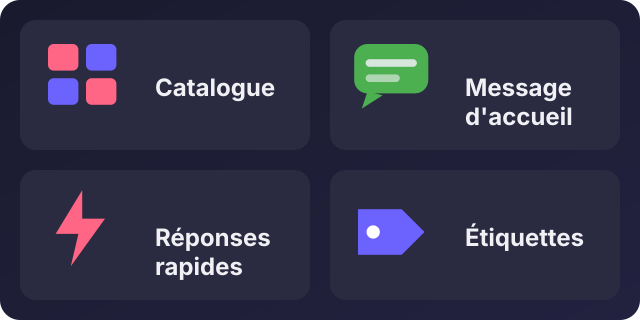
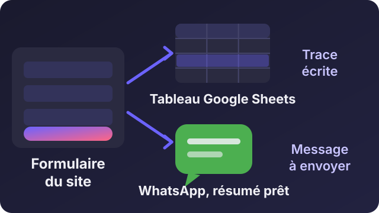

Recevoir des commandes par WhatsApp sans perdre un seul message

Écouter cet article · environ 3 min
Beaucoup de commerces vendent par WhatsApp : le client écrit, on répond, on note la commande quelque part. Puis les messages s'accumulent, une commande se perd, un client attend. Voici une méthode en deux temps : organiser WhatsApp Business, puis garder une trace de chaque commande dans un tableau.
1. Organiser WhatsApp Business
L'application WhatsApp Business (gratuite) propose des outils qui évitent déjà beaucoup d'erreurs :
- Catalogue : vos produits avec photo, prix et description. Le client les voit sans vous demander.
- Message d'accueil et d'absence : une réponse automatique en dehors de vos horaires.
- Réponses rapides : vous tapez un raccourci, le message complet apparaît (adresse, horaires, modes de paiement).
- Étiquettes : par exemple « Nouvelle commande », « À livrer », « Livré ». Une conversation = une étiquette, et vous voyez en un coup d'œil ce qui reste à faire.
Prenez dix minutes pour créer ces quatre éléments : c'est la base.

2. Un formulaire qui garde la trace
L'idée : le client remplit un petit formulaire sur votre site. En un clic, deux choses se passent : la commande est enregistrée dans un tableau Google Sheets, et WhatsApp s'ouvre avec le résumé prêt à envoyer. Vous avez une trace écrite, même si le client oublie d'envoyer le message.

Le tableau
Créez un Google Sheets avec un onglet Commandes et ces en-têtes en ligne 1 :
Date | Nom | Produit | Quantité | Quartier | StatutLe code côté Google
Dans le tableau : Extensions > Apps Script. Collez :
function doPost(e) {
const feuille = SpreadsheetApp.getActiveSpreadsheet().getSheetByName('Commandes');
const d = JSON.parse(e.postData.contents);
feuille.appendRow([new Date(), d.nom, d.produit, d.quantite, d.quartier, 'Nouvelle']);
return ContentService.createTextOutput('ok');
}Cliquez sur Déployer > Nouveau déploiement, type Application Web. Réglez « Exécuter en tant que » sur Moi et « Qui a accès » sur Tout le monde. Copiez l'adresse (URL) qui se termine par /exec.
Le formulaire sur votre site
<form id="commande">
<input name="nom" placeholder="Votre nom" required>
<input name="produit" placeholder="Produit" required>
<input name="quantite" type="number" min="1" value="1" required>
<input name="quartier" placeholder="Quartier de livraison" required>
<button type="submit">Commander sur WhatsApp</button>
</form>
<script>
const URL_TABLEAU = 'COLLEZ_ICI_VOTRE_ADRESSE_EXEC';
const NUMERO = '2250172527765'; // votre numéro, sans + ni espace
document.getElementById('commande').addEventListener('submit', (e) => {
e.preventDefault();
const d = Object.fromEntries(new FormData(e.target));
// 1. on garde la trace dans le tableau
fetch(URL_TABLEAU, { method: 'POST', mode: 'no-cors', body: JSON.stringify(d) });
// 2. on ouvre WhatsApp avec le résumé
const texte = 'Bonjour, je commande : ' + d.produit + ' x' + d.quantite
+ '\nNom : ' + d.nom + '\nQuartier : ' + d.quartier;
window.open('https://wa.me/' + NUMERO + '?text=' + encodeURIComponent(texte), '_blank');
});
</script>Remplacez COLLEZ_ICI_VOTRE_ADRESSE_EXEC par l'adresse copiée plus haut, et le numéro par le vôtre (avec le 225 devant, et les 10 chiffres).
3. Suivre les commandes
Chaque ligne arrive avec le statut Nouvelle. Quand vous avez livré, changez-le en Livrée. Un filtre sur la colonne Statut vous montre ce qui reste à faire. Vous pouvez aussi ajouter une colonne Téléphone ou Montant selon vos besoins.
Les limites à connaître
- Le formulaire est public : n'importe qui peut y écrire. Pour un petit commerce, c'est suffisant, mais surveillez le tableau.
- Aucune donnée sensible ne doit y passer : pas de numéro de carte, pas de code Mobile Money.
- Cette méthode convient aux volumes modestes. Quand les commandes deviennent nombreuses, ou qu'il faut gérer le stock et les paiements, un vrai outil de commande devient plus sûr.
Si vous voulez cette solution adaptée à votre commerce, avec votre catalogue et votre façon de livrer, écrivez-moi.